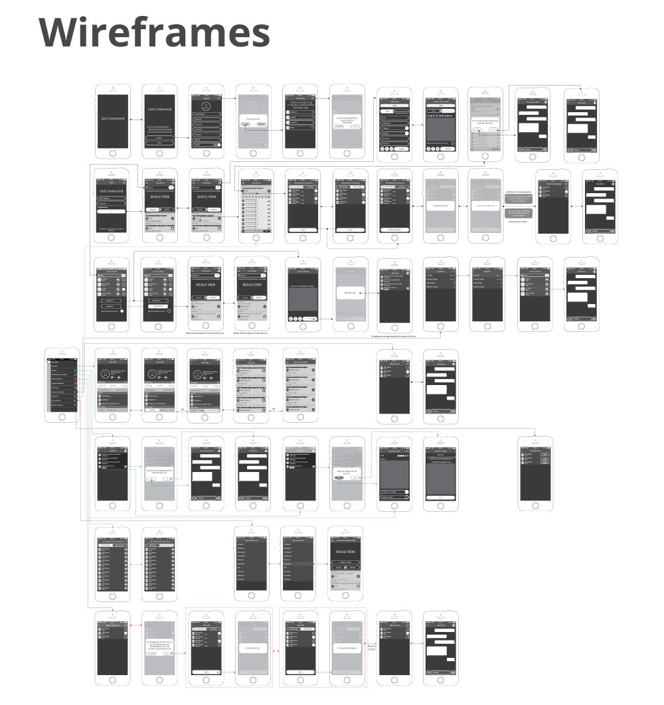
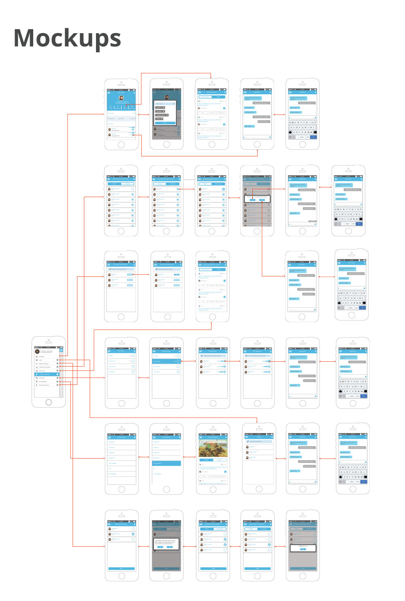
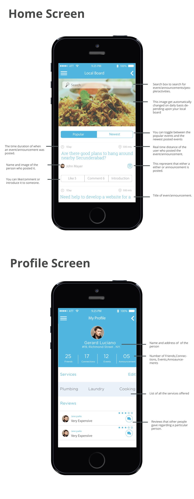

UX Internship, [x]Cube Labs
User Expereince, Information Architecture,
- Portfolio
- UX Internship, [x] Cube Labs, Hyderabad.
Summary
My two-month summer internship at [x]Cube Labs taught me the norms of working in an industry – timely delivery, client feedback, iterations etc. I was involved with working on two major projects. I also had to work in collaboration with Design Team office at Dallas, Texas and it was a great learning experience
My main project was to design an ios application which helps to create a social media application for a small localized area. The main focus of the application was to create an interlink between people who are living in similar localities within an area of 2-5 km. This app distinguishes from other related apps like, circle, etc is that it is also integrated with business and commercial features wherein you can make an announcement on your local board to search for people for doing a particular job such as teaching/cooking/singer etc. Also, it comes with features of integrating such as adding skills, featuring reviews, customized local boards etc which helps to create the platform very user centric.
My secondary project was a redesign of an android bar code reader application. The initial look and feel of the application was similar to a traditional kisok and my task was to heuristically evaluate, find imperateive usability flaws and then redesign the application giving it a modern look.
Other than that I assisted in various ongoing projects with creating of wireframes, and creating rapid prototypes for quick testing.
I was lucky to be under the guidance of a wonderful set of mentors, who at all stages guided me in all aspects – from lessons in usability to things not to miss on weekends in Hyderabad – the two month journey was an extensive learning experience. [x]Cube Labs conducts exciting workshops for its employees once in a week to share new experiences and thoughts.



Project Status: Complete
Internship: [x]Cube Labs
Duration: May 2014-July 2014
Responsibilities: User Experience Design, Information Architecture.
Mentors:
Mr. Supreet Singh, Manager Design